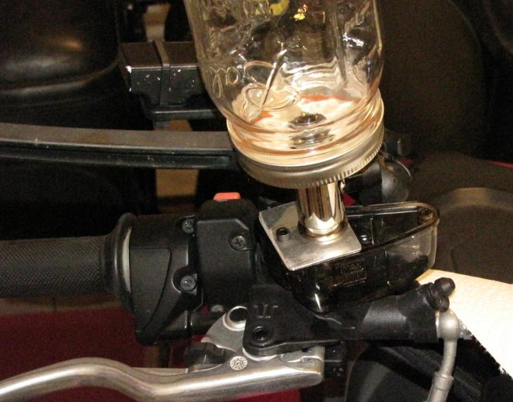
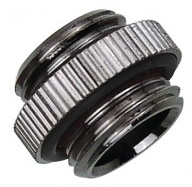
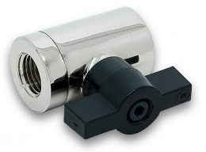
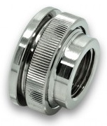
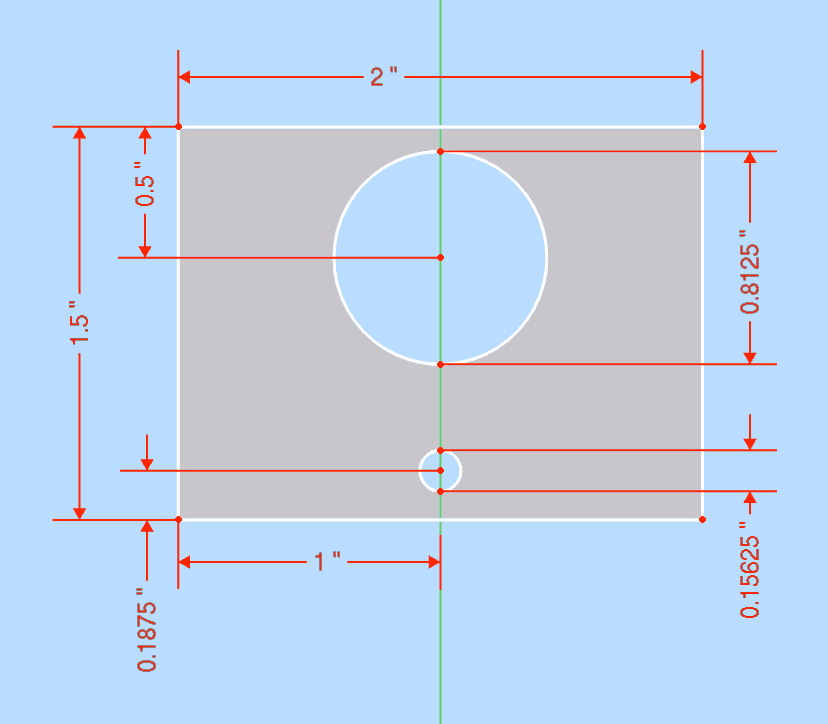

(TWO REQUIRED)

I do all the maintenance on my bikes by myself, so I need to be a little creative when it comes to replacing brake and clutch fluid, as this is usually a two-person job.
For the caliper end of things, I use Stahlbus bleeder valves. These are far superior to SpeedBleeders, and worth the price. (see discussion below)
For the master cylinder end, I created a cheap brake fluid supply bottle out of a Mason jar and about $40 in computer water-cooling parts.
To use it:
I've used pressure bleeders and other equipment, but this is the cleanest method I've used so far.
I've used commercial supply bottles, but they're all designed for cars and don't attach well to the master cylinder, and the valves are usually very poor quality. They end up leaking fluid everywhere, and make more of a mess and hassle than they save.
Required PC water cooling parts from Performance PCs:
|  | ADT-XMM | Koolance Nozzle Coupling Adapter, G1/4" Male-Male - Silver (TWO REQUIRED) |
$2.95 |
|  | EK-AF-BV-10-G14-NK | EK-AF Ball Valve (10mm) G1/4" - Nickel | $18.99 |
|  | EK-AF-PT-G14-NK | EK-AF Pass-Through G1/4" - Nickel | $6.99 |
|
XSPC-G14-BULK-SL | XSPC G1/4" to G1/4" Bulkhead Fitting - Chrome Finish | $4.99 |
| Total: | $36.87 |
Also needed:
You can remove the bracket for the rear brakes, which usually have a round threaded cap. If the rear brake proves to be difficult, you can buy another master cylinder lid and drill a 13/16" hole in it, plus another small hole to admit air.
SpeedBleeders are brake bleeder nipples with spring-loaded one-way check-valve balls. They're a nice idea.
The problem is when you loosen them to release the check-valves, fluid leaks out and air is sucked in past the threads where they screw into the caliper.
You can work around this by smearing grease around the threads or other methods, but it's still kind of a mess.
With Stahlbus bleeders, the nipple with the check-valve screws into an o-ring sealed chamber, which then screws solidly into the caliper. No leaks.
Another advantage of the design is that you can control how loose the valve is, and how easily it passes fluid. You can even loosen them enough to fill the system through the bleeders.